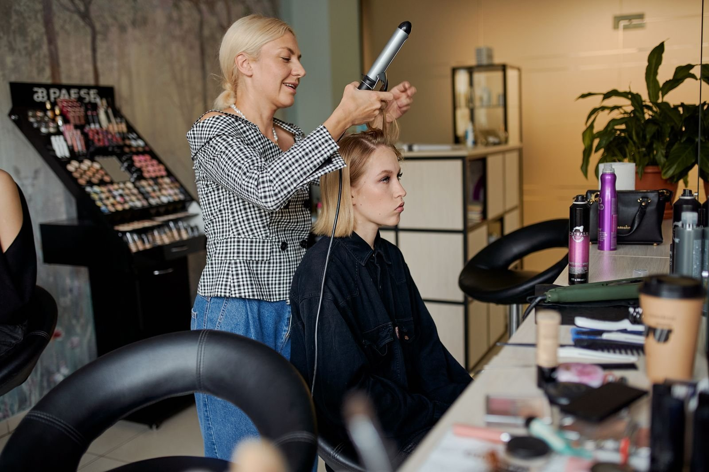

Silk press aftercare: keeping it smooth for about two weeks
By a KuuStore stylist · Published November 14, 2026 · Last reviewed November 14, 2026
Your press is perfect at 6 p.m. in a Miramar salon chair — smooth, light, swinging when you turn your head. By day four, the roots have puffed, the ends look tired, and you are standing in the bathroom holding a flat iron like it owes you money. Here is the part nobody says out loud: a silk press (a temporary straightening of natural hair done with a blow-dryer and a flat iron, with no chemicals) is not finished when you leave the chair. The press is made in the salon. The two weeks are made at home, at night, in about five minutes a day.
The short answer: Wrap your hair around your head every night and cover it with a silk or satin scarf. Keep water and steam off it — shower cap on, every shower, no exceptions. Put no more heat on it than one light touch-up in the second week. Go light on products: a drop of oil on the ends only. Do those four things and most presses stay smooth for about two weeks, even in South Florida air.
Why does water undo a press? The one idea behind every rule
Heat does not change what your hair is. It changes the shape your hair is holding, for now. Your natural curl pattern is still in there, and water is the signal that tells the hair to go back to it. A strand that gets wet — from a shower, from steam, from sweat at the roots — starts curling again from that spot, and the press is gone there first. That is why presses always fail at the roots and the edges: those are the places that meet moisture first.
Here is the same idea with a shirt. A press is like ironing a linen shirt: smooth, flat, crisp. Steam is what the iron uses to press it — and steam is also what takes the press back out when the shirt hangs in a steamy bathroom. The water that set your curl free in the salon is the same water that brings it back at home. Second picture, from paper: pressed hair is like a paper star you folded flat. Leave it dry and it stays folded. Sprinkle it, and the paper swells and starts opening back into its old shape. Every rule below is just a way of keeping your hair dry and folded.
Rule 1: wrap it every night, the same way
Brush the hair around your head in one direction, following its curve, until it lies flat against your scalp all the way around — stylists call this a wrap, or a doobie. Pin it with two or three large bobby pins where the ends land, then tie a silk or satin scarf over it. Satin matters: cotton pulls moisture out of hair and its rough surface frizzes the press while you sleep. If wrapping fights you, large pin curls (loose rolls of hair pinned flat) under a satin bonnet are the backup plan. What does not work is the loose ponytail or the bare bun — both bend the hair in the middle and leave a crease you will try to iron out in the morning.
Rule 2: moisture is the enemy, in all its costumes
Water rarely arrives as rain on a press. It arrives as steam from a hot shower, sweat from a workout, and November humidity rolling in off the ocean in Broward. So: shower cap on before the shower starts, every time, and let the bathroom air clear before you take it off. For workouts, wear a sweatband at the hairline, keep the hair wrapped or up, and — this is the step people skip — leave the wrap on until your roots are fully dry. Unwrap warm, damp roots and they puff on the spot. Let them cool and dry first, about 20 to 30 minutes after you finish, and the press survives the gym.
Rule 3: heat is a budget, and you already spent most of it
Your hair was blow-dried and pressed at the appointment. That was the heat budget for these two weeks. A flat iron every morning does not refresh the press; it spends the hair. Heat damage (hair that has been heated so much it will not curl back, even wet) builds quietly, one "quick touch-up" at a time. If a spot truly needs help in week two, one pass, on the lowest setting that works, with a heat protectant (a spray or serum that coats the strand so the iron's heat lands softer) applied first — and only on that spot, not the whole head.
Rule 4: products go on the ends, lightly, or not at all
A press looks light because it is light. Heavy butters and thick oils weigh it down, pull in dust, and make day six look like day twelve. If the ends feel dry, rub one drop of a light oil between your palms and press it into the ends only. Skip anything water-based — a water-based spritz is just rule 2, broken with a spray bottle.
Watch the night wrap done slowly, start to finish
The video below is one creator's full evening routine: how she brushes the hair around into a doobie wrap, where the pins go, and how the silk scarf ties so it stays on all night. It is the five minutes that decides whether a press lasts four days or fourteen.
What the video shows, in plain words: Zenese Ashley walks through her whole night routine for keeping a silk press smooth for two weeks. She brushes her pressed hair around her head with a boar-bristle brush, following the curve of her head so the hair lies flat in a full circle — the doobie wrap. She clips and pins the wrap where the ends land so nothing slips loose at 3 a.m., then ties a silk scarf over the whole thing, snug enough to stay, loose enough to sleep in. In the morning she takes the scarf off and brushes the wrap down, and the hair falls back into the press, straight and smooth, with no iron involved. Watch her hands: she never pulls the hair tight, and she never skips the scarf. The routine, not a product, is what carries the style into week two.
When to hand it back to a stylist
Book the next press instead of fighting the old one if your hair will not curl back when wet (that can be heat damage, and it needs a stylist's eyes, not more heat), if the press has hit the two-week mark and your scalp is due a real wash, or if breakage shows up as short snapped hairs around the hairline. A KuuStore stylist comes to you anywhere in Miami-Dade, Broward, or Palm Beach — and she will check the health of the hair before any iron touches it.